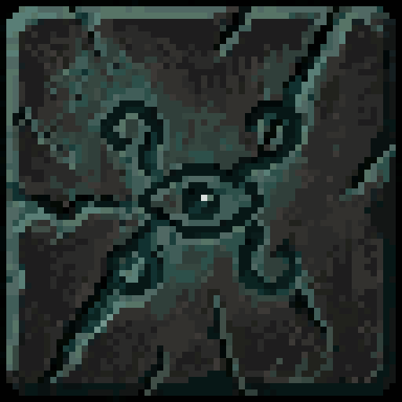
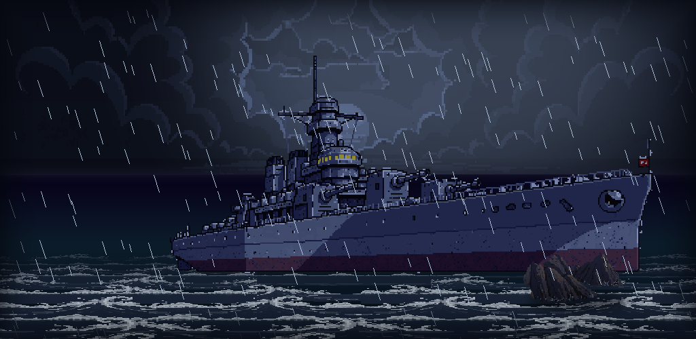
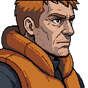
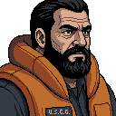
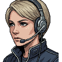
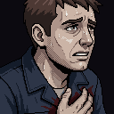

Wreckage of the Namtar
Board the derelict USS Namtar and see if you can survive the horrors.
In development, not yet released. Nothing on this page is a promise: the story, the features and how it is sold can all change before it ships. What will not change: no ads, no tracking, and it plays offline.

The ship
You are J. Michael Bridges, a Coast Guard boarding officer, alone on the USS Namtar after she ran aground. Search the ship, look for survivors, find out what happened, and get off alive.
Top-down survival horror
Pixel art in a dark, drowned setting. Play with on-screen touch controls or a game controller.
Scavenge to survive
Search for ammunition, upgrades and new weapons. Capacity is limited.
Make what you need
Craft items you need and upgrade your weapons with parts you find at workbenches.
Radios
Record your progress using radios. But not while something is close.
A vast battleship
Explore a vast, decaying battleship. Learn the secrets it hides.
Plays offline
No account, no internet needed to play, nothing collected. See the privacy policy for the details.
Characters

J. Michael Bridges
USCG Boarding Officer
Born in a small Midwestern town. Skilled fisherman and firearms enthusiast.

James R. Rockwell
USCG Boarding Team Member
Michael's partner on the cutter. Born on the West Coast, he was a champion swimmer.

Lacy R. Halvorsen
USCG Radio Operator
Born in the South, Lacy grew up on a farm and became a skilled hunter in her youth.

USS Namtar Crewman
Name unknown